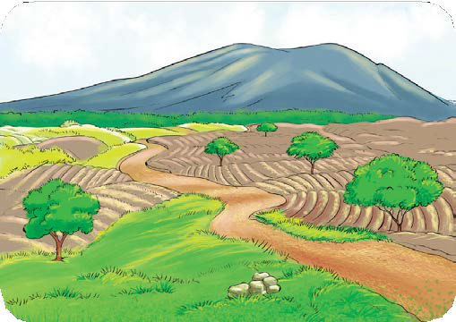
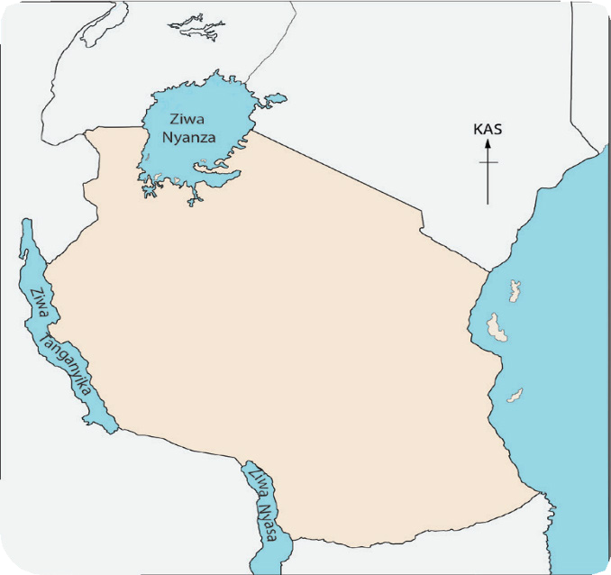
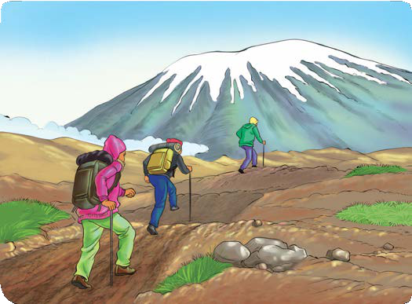
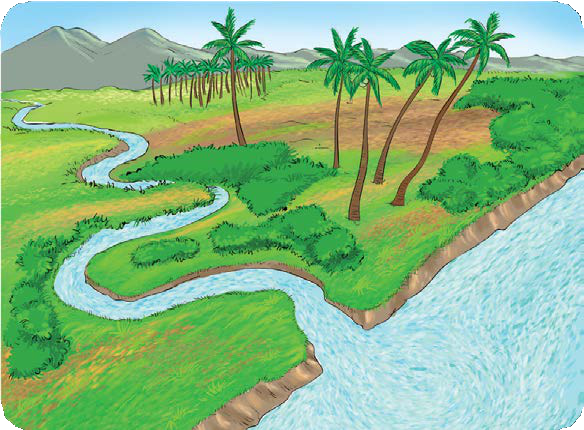
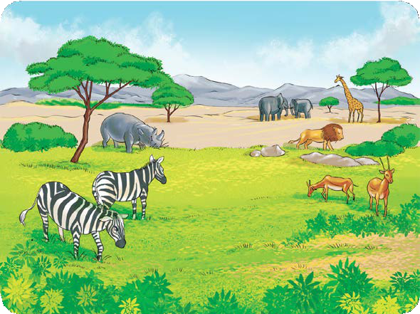

Ufahamu
Ghani / Soma shairi lifuatalo, kisha jibu maswali yanayofuata.
Naipenda nchi yangu
1.
Naipenda nchi yangu, yenye wingi wa neema,
Ni bora maumbileye, popote ukitazama,
Miinuko na mabonde, tambarare na milima,
Naisifu nchi yangu, nchi yangu Tanzania.

2.
Ina maziwa makubwa, Nyasa pia Tanganyika,
Na ziwa kubwa kabisa, ni Nyanza lafahamika,
Pia maziwa madogo, ni mengi kuhesabika,
Naisifu nchi yangu, nchi yangu Tanzania.

3.
Yenye mlima mrefu, Afrika unatajika,
Waitwa Kilimanjaro, duniani wasifika,
Watu wengi huupanda, kileleni wakafika,
Naisifu nchi yangu, nchi yangu Tanzania.

4.
Mito mikubwa midogo, ni mingi kuhesabika,
Mingi yao maziwani, baharini humwagika,
Na vijito kiangazi, kifikapo hukauka,
Naisifu nchi yangu, nchi yangu Tanzania.

5.
Ina mbuga za wanyama, na misitu ya hifadhi,
Urithi wa kupendeza, nchi yangu ya uhodhi,
Kuyaona haya yote, ninataka kwa ghaidhi,
Naisifu nchi yangu, nchi yangu Tanzania.
